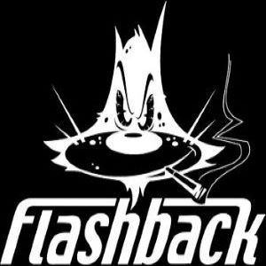

2000
Flashback
Flashback är ett forum som startades under år 2000. Forumet är ett av Sveriges äldsta som fortfarande finns kvar och har under de senaste 20 åren varit en av Sveriges mest besökta webbplatser. År 2000 uppstår forumet ungefär så som det ser ut i dag med öppna diskussionsforum i stället för som tidigare, slutna grupper för medlemmar.
